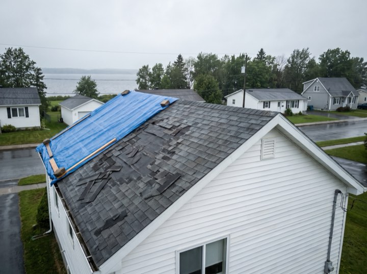
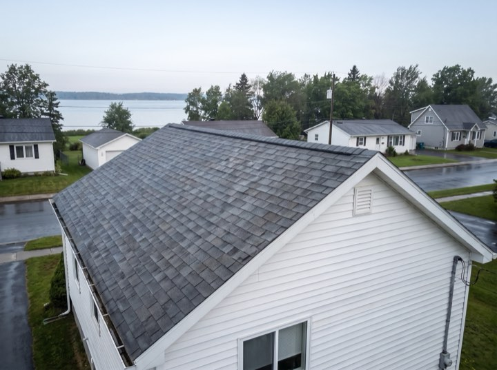
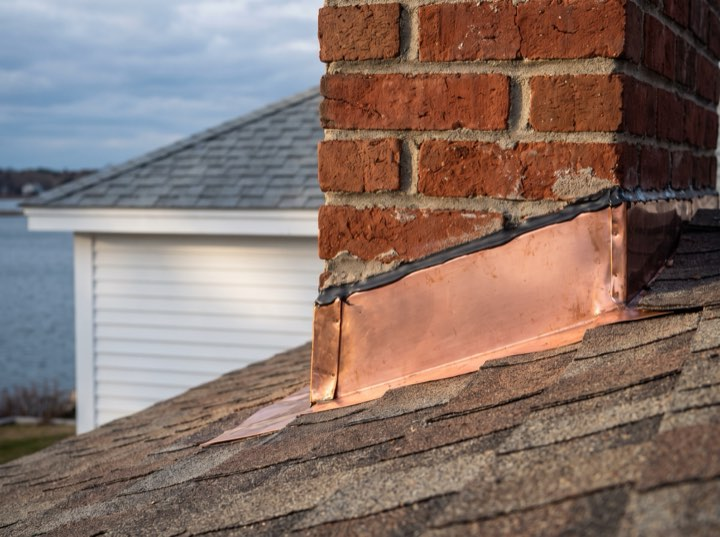
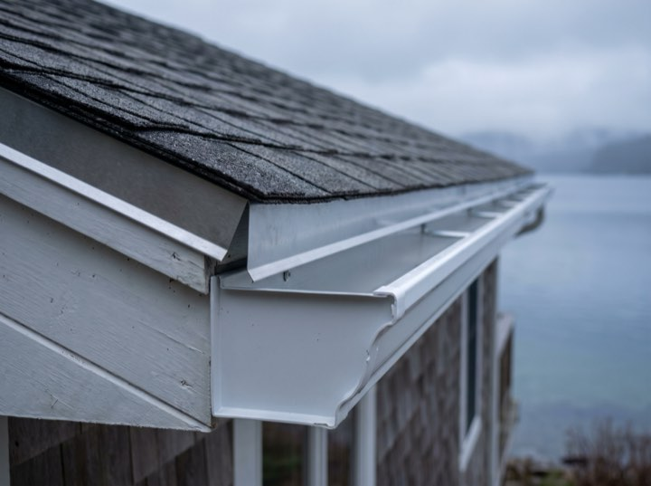
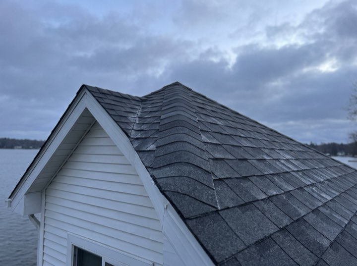

Storm & hail damage
Free inspection, a dated photo report filed before the adjuster arrives, and one of our inspectors on the roof beside them when they scope it.
Adjuster meetings · Claims & supplements
Storm and hail claims across the metro. We photograph the damage before the adjuster arrives, stand on the roof with them, and put the supplement in writing when they miss something, which they usually do.
One number to call
(620) 490-7728Services
Most calls fall into one of these. If yours doesn't, ring us anyway. We'll tell you straight whether it's a repair or a replacement.
Free inspection, a dated photo report filed before the adjuster arrives, and one of our inspectors on the roof beside them when they scope it.
Architectural shingle, metal or tile. Tear-off, deck inspection, ice-and-water barrier, and the site left clean.
Active leak or missing shingles after a storm. Same-day tarping to stop the damage, permanent fix scheduled after.
Half the roofs we replace failed early because the attic couldn't breathe. We fix the cause, not just the symptom.
Results
“The first adjuster wrote it up for four thousand. Sentry filed a supplement with photographs taken before he arrived, and the final cheque was just under nineteen.”Dana R. · Homeowner, Cedar Park
Supplements filed and won
If it's insurance, we meet your adjuster on site. If it's retail, you get a fixed written price with financing options.
“The financing made it possible. $110 a month instead of fifteen grand up front.”
“Handled the whole insurance claim. I signed two things and that was it.”
Process
The part most roofers hand back to you in a folder, which is the part that decides what the cheque says.
We go up, photograph everything, and tell you whether you need a roof or a repair. No pressure either way.
If it's insurance, we meet your adjuster on site. If it's retail, you get a fixed written price with financing options.
Most homes are one to two days. Materials delivered the morning of, site cleaned and magnet-swept at the end.
We walk it with you, register your warranty, and you have a direct number if anything ever comes up.
Documented
Every job is documented the way a claim needs it: before, during and after, with the detail shots the adjuster will ask for.





Call and a human answers: day, night, weekend, during the storm. Emergency tarping usually the same day.
(620) 490-7728Free inspection and an honest read on whether the claim is worth filing. Sometimes it isn't, and a denied claim on your record costs you more than the repair.